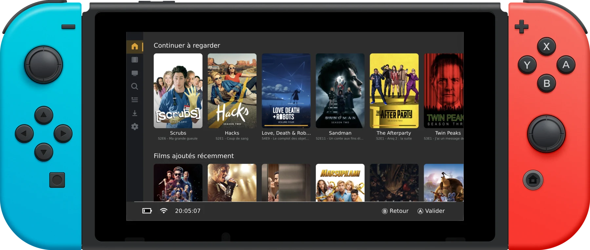

Sign in with Plex
Type a 4-character code on plex.tv/link, pick your server and your Plex Home profile — PIN-protected profiles included. No passwords on the console.
pleNx is a native, controller-first Plex client for Nintendo Switch — browse your server, queue your watchlist and play your movies with MPV, anywhere.

Every feature of your Plex server, redesigned for a gamepad.
Type a 4-character code on plex.tv/link, pick your server and your Plex Home profile — PIN-protected profiles included. No passwords on the console.
Continue Watching first, then every hub configured on your Plex, in the exact order your server returns them. Your setup, your rules.
Browse your account watchlist in the sidebar, sort and filter it, add or remove any movie or show — posters of items missing from your server are dimmed.
Take episodes on the road in original quality. One tap grabs a full season — or a whole show — with a storage gauge for your SD card.
Direct play and universal transcode (HLS), resume, chapters, external and embedded subtitles, audio track selection.
H.264 · H.265 · VP9 · AV1 · Opus · FLAC · AC-3 · TrueHD · DTS
Add WebDAV, FTP, SFTP and HTTP(S) shares straight from the UI — with a connection test before saving. USB drives work too, via libusbhsfs.
Press X (or long-press) on any poster: go to show, go to season, mark watched, download, watchlist. No detours through detail pages.
Fully translated interface, rich detail pages with cast and person filmographies, season pages, collections, genres illustrated with Kometa artwork.
The very same interface ships on every platform.
You'll need a console running Atmosphère CFW.
Drop pleNx.nro into
sdmc:/switch/ and launch it from the homebrew menu.
On first launch, pleNx offers to install a HOME menu tile — press the button and the app relaunches with full memory, required for video playback.
Enter the 4-character code at plex.tv/link, pick your server, grab the popcorn.